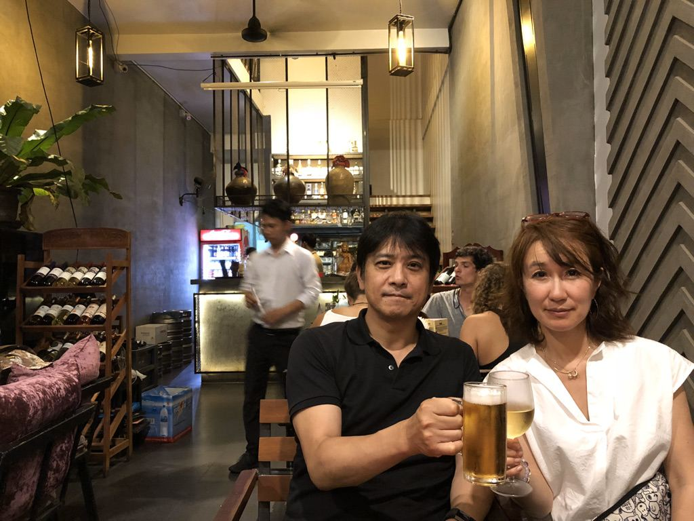
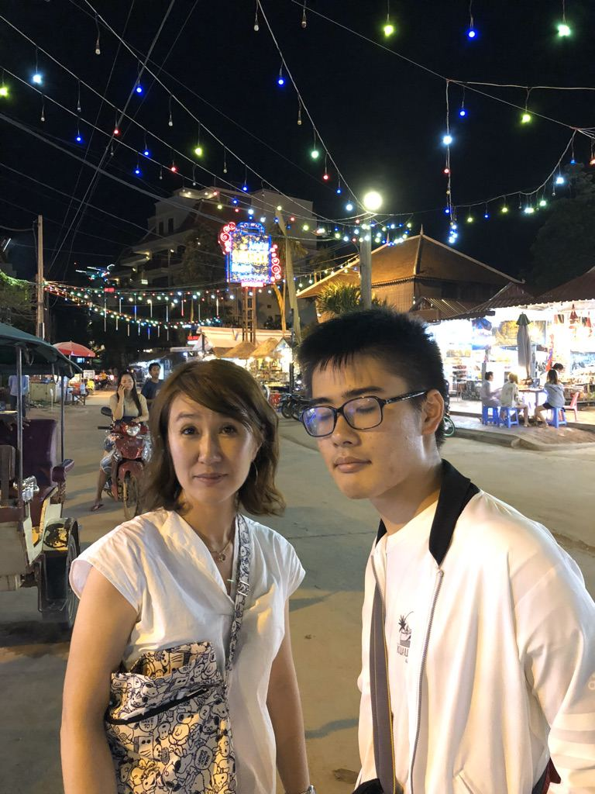
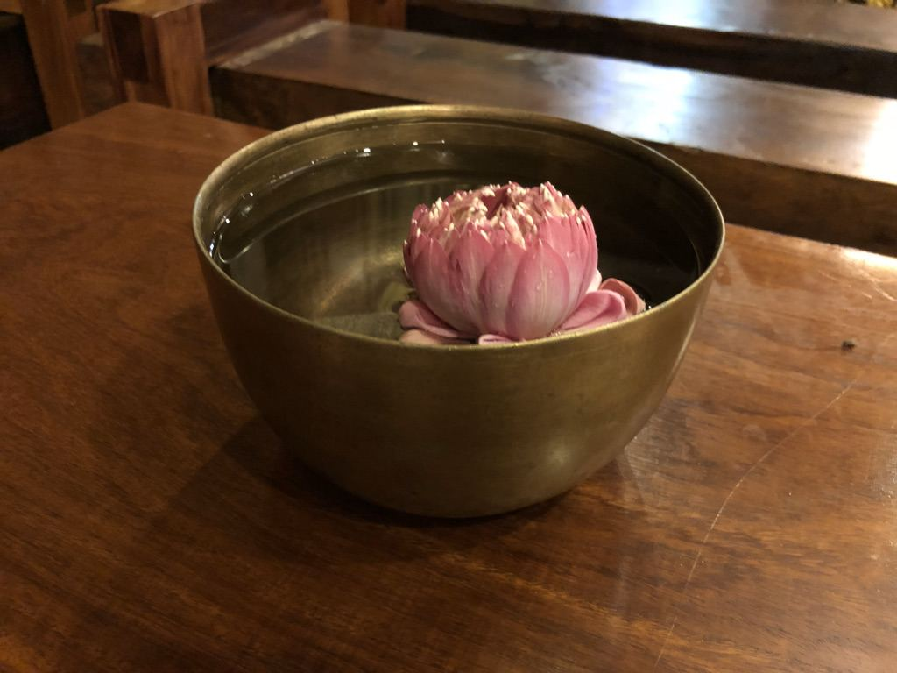
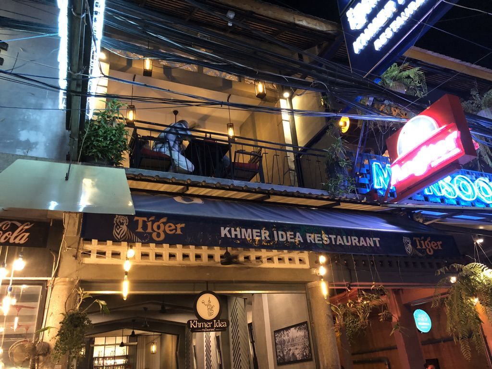

夕方の空港と、色電球の通り
成田 → シェムリアップ
朝の成田を発って、シェムリアップに着いたのは夕方の六時前だった。空港の建物は低くて、オレンジ色の屋根が何枚も重なっていた。飛行機のタラップを降りると、空気がいきなり身体にまとわりついてくる。東南アジアの空気は、いつも少しだけ水を含んでいる。
夜は妻と息子と三人で、町の中心へ出た。通りの上には色とりどりの電球が渡してあって、トゥクトゥクがのんびりと客を待っていた。クメール料理の店で最初の夕食をとり、ホテルに戻ると、テーブルの真鍮の器に睡蓮が一輪浮かべてあった。そういうものを見ると、ああ遠くへ来たんだな、と思う。



